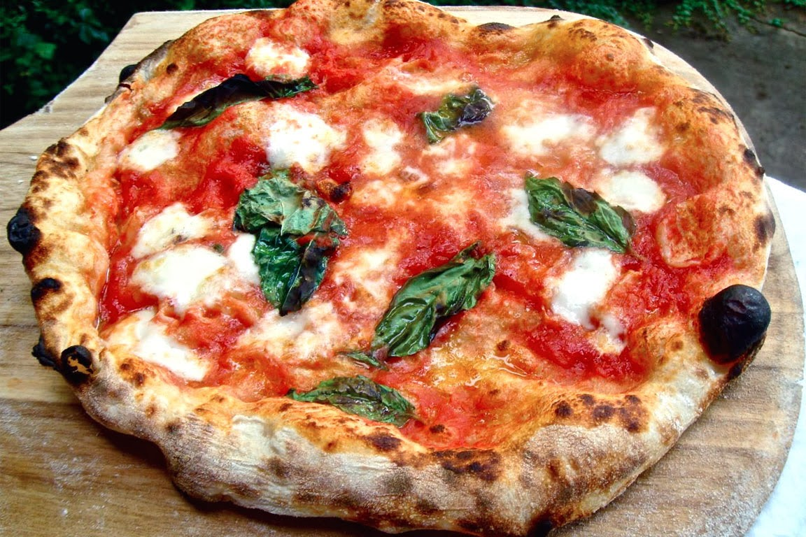

Pizza margherita Italian recipe

Who doesn’t love food made with fresh ingredients? I know I do.
This recipe for pizza is awesome because it uses fresh vegetables and cheese.
You can either use a pre-made pizza dough or you can make your own.
Ingredients
- 2 tablespoons extra virgin olive oil
- 1/2 lb. plum Roma tomatoes, chopped
- 1 clove garlic, crushed and finely chopped
- 1/2 tsp. salt
- 1 12" uncooked NY Style dough crust
- 6 oz. mozzarella cheese, shredded
- 6 fresh basil leaves cut into julienne strips
- extra virgin olive oil
- 1/4 cup fresh shredded parmesan cheese
Preparation
- Combine 2 Tbls. olive oil, tomatoes, garlic, and salt in bowl.
- Allow to marinate while making dough.
- Brush dough crust lightly with olive oil.
- Top with cheese, then tomatoes.
- Drizzle with olive oil.
- Bake in preheated 500F oven on pizza stone for 8−10 minutes or until crust is golden brown
- Remove from oven and top with parmesan cheese, then basil.
- Cool on a wire rack for 2−3 minutes before cutting into wedges and serving.
Back to main page